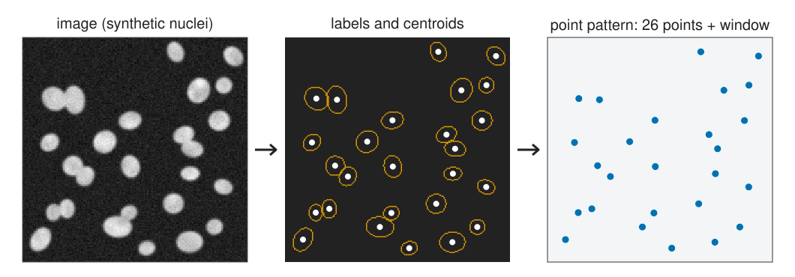
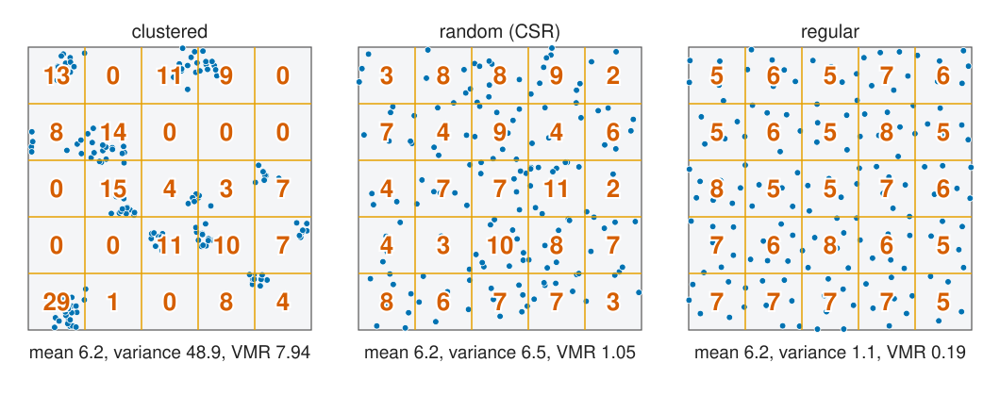
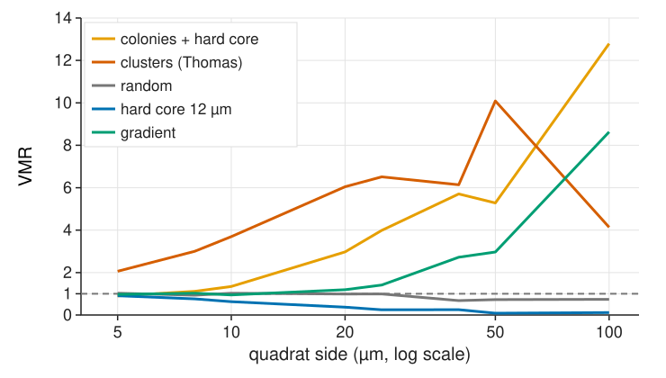
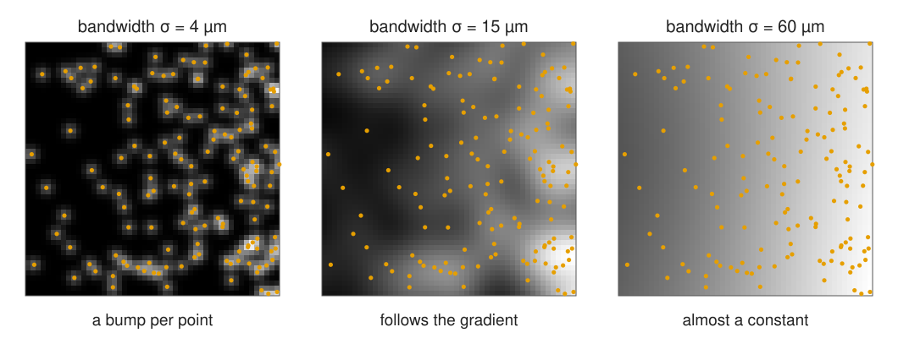
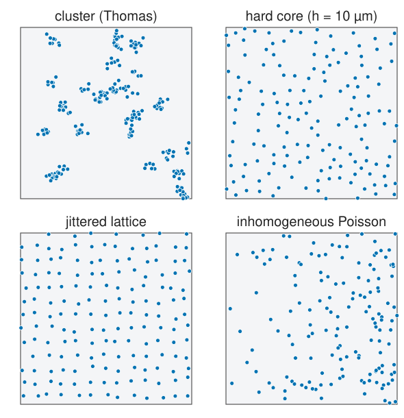

Labelling gave us objects, spot detection gave us spots. Often the question is not about one object but about where they are: are the cells clustered, spread evenly, or scattered at random?
A point pattern: positions, the window we looked in, and optional marks.
How detection errors turn into pattern artefacts.
Complete spatial randomness (the Poisson process): the null model of the day.
Clustered, random, regular, and why the eye is a poor judge.
Quadrat counts and the variance-to-mean ratio, and why the answer depends on the quadrat size.
Intensity: how many points per µm², and a map of it.
Slides titled The math give the formulas and proofs; the ideas are complete without them.
From objects to points

A point pattern is three things:
the positions\mathbf x_1, \dots, \mathbf x_n (centroids of labelled objects, or detected spots), in µm;
the windowW: where we looked. “No points here” only means something inside W; for tissue that is the tissue mask, not the whole image;
optional marks per point: a type (tumour or immune cell), a size, an intensity.
Conditional uniformity: for A \subset W, P(N(A) = k \mid N(W) = n) = \binom{n}{k}p^k(1 - p)^{n-k} with p = |A|/|W|: each of the n points falls in A with probability |A|/|W|, independently. (Proof: split W into A and W \setminus A, use independence, divide by P(N(W) = n).)
Simulation: draw N \sim \text{Poisson}(\rho|W|), then N uniform points. In a mask: uniform points in the bounding box, keep those inside (rejection).
Empty regions: P(N(A) = 0) = e^{-\rho|A|}. This gives the nearest-neighbour law of unit 2.
For tests we usually condition on n (the binomial process): simulate exactly n uniform points in W.
CSR is a null model, not a hypothesis about cells
CSR means no interaction (points ignore each other) and no preferred place (constant ρ).
Real cells are almost never CSR: they have a size, they divide, they follow vessels and tissue layers.
So “CSR rejected” is the start of an analysis, not the result. The useful questions: how does the pattern differ (more or fewer neighbours than chance?) and at which distance?
Two different reasons for “clustered-looking” patterns:
first order: the intensity ρ(x) varies (more cells near a vessel), but cells do not interact;
second order: cells attract or repel each other (colonies, contact inhibition).
Units 2–4 assume a constant ρ. Unit 5 relaxes it.
Quadrat counts

Divide W into m equal squares and count. Under CSR the counts are Poisson, so variance ≈ mean. The index of dispersion\text{VMR} = s^2/\bar n: > 1 clustered, ≈ 1 random, < 1 regular.
It is the Pearson χ² test of “all quadrats have the same expected count” (given n, the counts are multinomial with equal probabilities).
LargeX^2: clustered. SmallX^2: regular (use the lower tail).
100 points in 25 quadrats: reject CSR towards clustering at 5 % if X^2 > 36.4 (VMR > 1.52), towards regularity if VMR < 0.58.
The approximation needs expected counts of about 5 or more per quadrat; with very small quadrats, use simulation (unit 4).
Try it: quadrats
One number, which scale?

The VMR depends on the quadrat size:
quadrats much smaller than the clusters: almost every count is 0 or 1, VMR → 1 (or < 1 with a hard core);
quadrats that hold whole clusters: VMR up to about 1 + (points per cluster);
colonies of cells with a size: regular at 5 µm (0.90) and clustered at 20 µm (2.97). Both are true.
a gradient looks random in small quadrats and clustered in large ones.
One number cannot describe structure at several scales. Units 2–3 replace it by functions of the distance r.
Estimating the intensity

One number: \hat\rho = n / |W| (use the tissue area).
A map: blur the point image with a Gaussian of bandwidth σ (recall kernels), and divide by the blurred window, so that the estimate does not drop near the border.
σ too small: a bump per point. σ too large: a constant. The same trade-off as any smoothing; unit 5 needs it.
The math: kernel intensity
\hat\rho(\mathbf x) = \frac{1}{e(\mathbf x)}\sum_{i=1}^n k_\sigma(\mathbf x - \mathbf x_i), \qquad e(\mathbf x) = \int_W k_\sigma(\mathbf x - \mathbf y)\,d\mathbf y,
with k_\sigma the 2D Gaussian (integral 1).
Without e(\mathbf x), part of each kernel’s mass falls outside W and \hat\rho is too low near the border (up to a factor 4 in a corner). e(\mathbf x) is the blurred window indicator: one more Gaussian blur.
For a rectangle [0, a] \times [0, b]: e(x, y) = [\Phi(\tfrac{a - x}{\sigma}) - \Phi(\tfrac{-x}{\sigma})]\,[\Phi(\tfrac{b - y}{\sigma}) - \Phi(\tfrac{-y}{\sigma})], with Φ the normal CDF.
Integral: \int_W \hat\rho \approx n; the estimate is unbiased for a smoothed version of ρ(x).
Leave-one-out at the data points (\sum_{j \ne i}) is needed when \hat\rho(\mathbf x_i) is used to correct a second-order function (unit 5).
Models that are not CSR

Named models, so that the demos and the tests have something to find:
cluster (Thomas, Matérn): parents at random, each with a Poisson number of offspring scattered around it;
hard core: no two points closer than h (add points at random, reject those too close);
jittered lattice: a grid with random displacements; strongly regular;
Image libraries and statistics packages call the field spatial point pattern analysis.
The math: the cluster process
Thomas process: parents form a Poisson process of intensity κ; each parent has M \sim \text{Poisson}(\mu) offspring, displaced by independent N(0, \sigma^2 I) vectors; the parents are discarded.
Intensity: \rho = \kappa\mu (superposition of the offspring of all parents).
Counts in a region Q much larger than σ: N(Q) \approx \sum_{\text{parents in } Q} M_j, a compound Poisson sum, so E[N] = \kappa|Q|\mu, \text{Var}[N] = \kappa|Q|(\mu + \mu^2) and \text{VMR} \to 1 + \mu.
Region much smaller than σ: offspring of one parent rarely share it, VMR → 1.
Simulation: draw parents in W enlarged by about 4σ, so that clusters whose parent lies just outside W are not lost.
Matérn cluster: offspring uniform in a disc of radius R instead of Gaussian.
Try it: points detected from an image
Where this leads
Unit 2: distances to the nearest neighbour and to the nearest point from an empty location (G, F, J), and the edge of the window.
Unit 3: all neighbours at every distance (Ripley’s K, L and the pair correlation g): the scale question of the quadrats, answered.
Unit 4: is the difference from CSR more than chance? Simulation envelopes.
Unit 5: two cell types, and an uneven ρ(x).
The relations unit of the measurements day met the nearest-neighbour distance and Clark–Evans; unit 2 starts there.
Summary
A point pattern is positions + window + marks; the window (tissue mask) is part of the data.
Detection leaves fingerprints: merged spots look regular, split objects look clustered, objects with a size have a hard core.
CSR (homogeneous Poisson): Poisson counts with mean ρ|A|, independent regions; given n, uniform positions. It is the null model, almost never the truth.
Quadrat counts: VMR > 1 clustered, < 1 regular; the χ² test. The verdict depends on the quadrat size.
Intensity: n/|W|, or a kernel map with an edge correction; the bandwidth decides what counts as “density”.